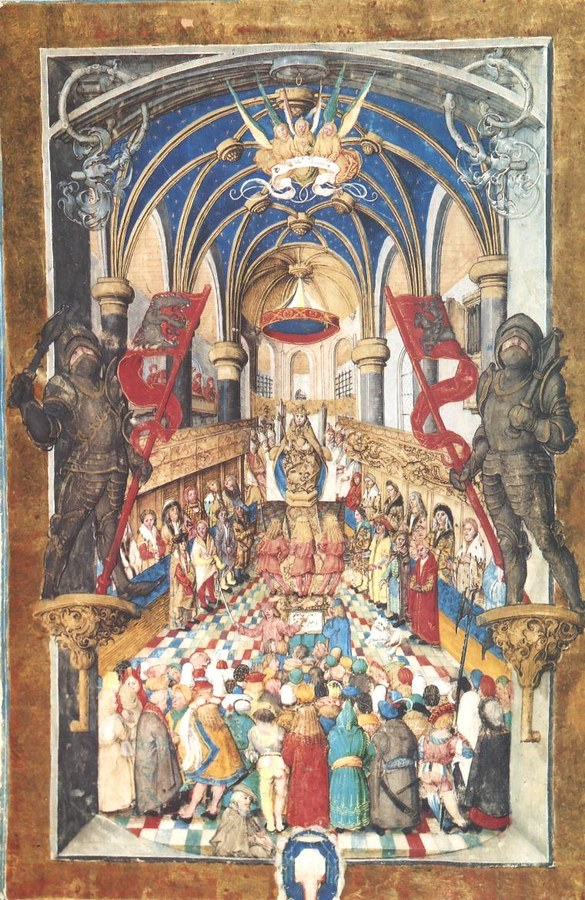

Kingdom of Poland (Lesser Poland lords)¶
Overview¶
[Historical record] After Louis I of Hungary and Poland died on 10 Sep 1382, the Lesser Poland lords crowned his daughter Jadwiga King (16 Oct 1384) and chose Jogaila as her husband at Krėva (14 Aug 1385). Jogaila was baptised Władysław at Kraków on 15 Feb 1386, married Jadwiga on 18 Feb and was crowned on 4 Mar. Jadwiga died on 17 Jul 1399; Jogaila reigned until 1 Jun 1434. Milestones: Vilnius-Radom (1401), Grunwald (15 Jul 1410), Horodło (2 Oct 1413), the crown affair (1429-30), the Jedlnia privilege (4 Mar 1430), Władysław III at Varna (10 Nov 1444), Casimir crowned 25 Jun 1447.
Kingdom of Poland (Lesser Poland lords)

Kingdom of Poland (Lesser Poland lords) · faction — Image: Master of the Bright Mountain Missal, Public domain via Wikimedia Commons¶

Tipas |
grupuotė |
Pastaba |
Crown of the Kingdom of Poland, united with Lithuania through the personal union of Jogaila. |
Wants (by book)¶
Book |
Goal |
Leverage |
Red line |
|---|---|---|---|
I |
A king with an army against the Order |
The crown; Jadwiga |
No Lithuanian kingdom |
II |
Lithuania governed for the Crown; Red Ruthenia |
Skirgaila, then Vytautas as lieutenant |
Separate Lithuanian title |
III |
Vilnius-Radom reversion; Dobrzyń, then Pomerelia |
Polish knights at Grunwald |
Losing the union |
IV |
Horodło on Polish terms; no Lithuanian crown |
Oleśnicki’s guards on the Noteć ford (Aug 1430); Sophia’s sons |
Vytautas crowned |
V |
Podolia, Volhynia; a Polish viceroy in Lithuania |
The Podolia grab (Nov 1430); Grodno 1432 |
Losing Lithuania to Casimir’s council in 1440 |
Patron Force¶
[The saga’s invention] The Gold-Glutton from 1411, and the White Silence, fed by baptisms bought for crowns. Jogaila’s baptism settles it over Krėva and Vilnius (Book I ch. 28b, 29).
Internal tensions¶
Two camps: the Lesser Poland lords (Spytko of Melsztyn, Jan of Tarnów, Oleśnicki) against a Hussite-leaning party (Spytko III of Melsztyn, killed at Grotniki 1439). The lords repeatedly overrule Jogaila: they block the crown (IV ch. 19, 23) and withdraw approval of Švitrigaila (7 Nov 1430).
Notable members¶
Ryšiai
Feeds: Aukso Rijūnas (Mercator-Rex) (1411–…) · Baltoji Tyla (White Silence) — Fed by purchased baptisms wherever they occur (incl. Jogaila’s).
Holds: Auksinė grandinė (the strangling chain) (1430–1438) — Remains in Kraków with the bishop’s people (the treasury).
Ruled by: Jadvyga (Jadwiga) (1384–1399) · Jogaila (1386–1434) · Jogailaičiai (Jagiellonians) (1386–…)
Served by: Zbigniew Oleśnicki (1411–1455)
Sąsajos¶
graph LR
gold_glutton["Aukso Rijūnas (Mercator-Rex)"]
golden_chain["Auksinė grandinė (the strangling chain)"]
jadvyga["Jadvyga (Jadwiga)"]
jogaila["Jogaila"]
jogailaiciai["Jogailaičiai (Jagiellonians)"]
olesnicki["Zbigniew Oleśnicki"]
poland["Kingdom of Poland (Lesser Poland lords)"]
white_silence["Baltoji Tyla (White Silence)"]
poland -->|Holds| golden_chain
jogaila -->|Rules| poland
jadvyga -->|Rules| poland
olesnicki -->|Serves| poland
white_silence -->|Fed by| poland
gold_glutton -->|Fed by| poland
jogailaiciai -->|Rules| poland
style poland stroke-width:3px